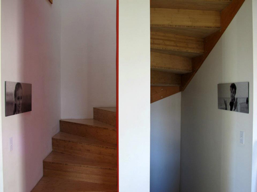
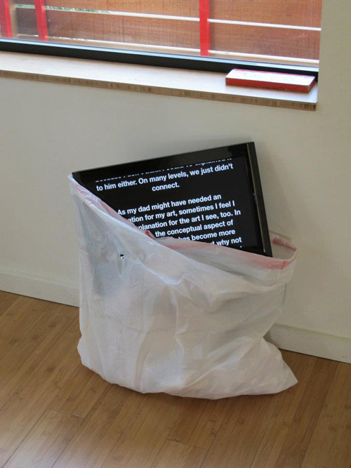
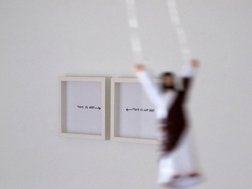
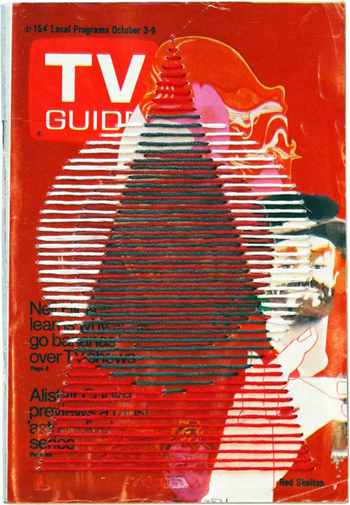
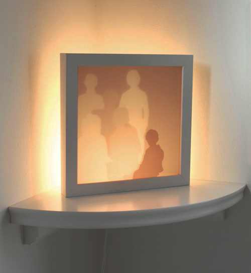
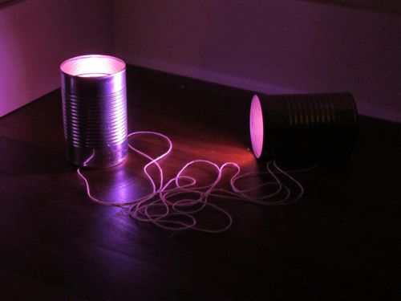
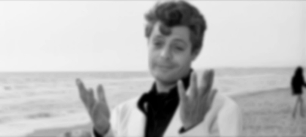

The Sweet Life (Act Like You're Interested)
by Troy Gua
November 5 - 24, 2011





Act Like You're Interested
an essay by Troy GuaI have wanted to see Fellini's 'La Dolce Vita' for as long as I can remember. I finally watched it early this year. I had built it up in my mind so much over the years that it couldn't have lived up to the masterpiece of filmmaking I had always heard it was. I was expecting a religious experience, a life altering piece of art. It was good. Maybe the years that passed between its making and my viewing had allowed the film world to catch up with its genius, because to me, it was a good film, but it didn't alter my life. Or maybe I just didn't get it. There was a disconnect.
There's a small episode in the film where the protagonist, Marcello, meets up with his father, who is visiting from another town. It's obvious to the viewer that father and son love each other and want to spend time together, but it is also obvious that they don't truly know each other - they want to, but it's just not possible. There's a generational disconnect. There's a familial disconnect. I felt that with my father. I loved him and respected him, and I'm quite sure the feelings were mutual, but we didn't really, truly know each other. I don't think my dad would get my art. That's ok, because I don't think I could've explained it to him either. On many levels, we just didn't connect.
As my dad might have needed an explanation for my art, sometimes I feel I need an explanation for the art I see, too. In many cases, the conceptual aspect of contemporary work has become more important than the aesthetic, but why not have both? As an artist, I'm always trying to make connections, and I have a hard time with visual work that doesn't quite resonate with me on some basic level that I subjectively define as art for myself. But that's just me. I guess there's a disconnect here, too.
My dad had a phrase he would use with me when taking me to public places or social gatherings. I was a shy, introverted kid, and lived very much inside my head. Before entering whatever event or location he had brought me to, he'd look down at my slouching figure and say sternly "Act like you're interested, dammit". That sticks with me. I took it literally. If I act like I'm interested, maybe I can be included. If I act like I'm interested, maybe I can be in the club. If I act like I get it, maybe I won't feel excluded. If I act like I get it, maybe I can connect the disconnects.
Well, it didn't work. I couldn't act interested, but I could become interested - and that was the key. It became an exercise in engagement, in examination, in connecting. So, in a way, maybe it did work after all. Maybe that's what my dad was really trying to get at. Maybe "act interested" was just old school code for "ask questions, look deeper, investigate". And that bit of fatherly wisdom translates into media, politics, art, relationships, and the whole of our sweet lives. It's how we find meaning in it all.
--------------------------------------------------------------------------------ICARUS (desire burns)
by Sharon ArnoldThere he was in the photo, as perfectly proportioned as a Greek statue, holding a starburst Les Paul and smiling - obviously friendly. He was a musician, an artist, a revolutionary; a post-beat beatnik with long hair and relaxed confidence. This man was a dream, a god, a yearning I could not articulate. In him lay an infinite realm of possibility. Once, there was a time when I couldn't help being enthralled by a man I hadn't known since the age of four, but not anymore. In the stark light of my misguided projection, he turned out to be a man I never truly knew; a man I'll never get to know. That man was my dad.
The disconnect to people in our lives begins with a story of hope and potential, and ends in doubt and uncertainty. When this happens we're looking through a warped lens across a crowded room, across a river, across time. We can neither touch nor hear each other. We can't possibly know what the other is thinking. We can't speak at all. By the very act of constructing an image, we fill the void with our imagination; rampant fantasies build up a persona so big we [they] will never rise high enough to meet the person within our internal world. We have constructed a phantasm, a golem, a chimaera. Our desire is a fiction.
That distortion is projected over a multitude of things in our lives. It's a magnifying glass that when applied to a certain object of affection, obsession, or fixation loses us entirely in its vast malconformation. We forget what or who it is we are looking for. Even worse still, we apply that lens to ourselves, forgetting who we are. We live in danger of being swallowed whole by our preoccupation, caring so much about the object of our desire that we have become the same as it, as far from reality as can be. As Icarus was taken with the sun and with flight, so are we taken with ourselves. Our fiction is a mirror.
Artists regularly struggle with these disillusions and warped lenses. The work demonstrates an internal battle between what we know, what we think we know, what we see with our eyes versus what we know is there but can't see. We are in the business of creating illusions and breaking them down, buying into them even as we dismantle them so as not to believe them. Truth versus non-truth versus lie. We fall prey to our own seductive traps, speaking in a language meant only for ourselves to justify our particularly unique terms of entrapment. But it's an effect of falling in love with our own mythology that we engage others to do the same - or not. The danger of exclusivity is ever present. The fear of not understanding, interpreting, seeing, believing, knowing, or even being aware of the story an artist is telling is the one common thread linking those who claim to not be interested [in art] to each other. However, when we're successful, the pleasure of that real and true connection between us and everyone we experience it with is almost unbearably sweet. The audience completes us - without this there is no narrative, no discourse, no mythology, no collective language to pass on.
So we're interested[dis]interested. All of these things and none of them are true at any given time so we must withdraw, pull away, see these incidents for what they are - manifestations of our dreams, desires, hopes, monsters, goals, fears, and everything we've ever wanted within and outside of our reach. If we get too close, we are burned. If we stray too far, our core becomes too cool to rekindle. Better perhaps to strive for an ellipse that brings us near enough to warmth, but far enough to find truth. Time alongside, and time alone. Time enough to gain something worthwhile from our experience and to share space with whatever story we tell ourselves and believe.
My dad never really gave me any good advice other than a nonspecific cavalier statement when I was fourteen: I could do anything I wanted in the world. I never knew if he meant it as a universal absolute for all of us, or if I specifically was privy to this unique trait. I decided long ago that in the end, each of us must choose and decide for ourselves the truth of where and who we are, to whom and how much. It is our interest, our desire that compels us.
--------------------------------------------------------------------------------NEPO Little Treats show: November 5 - 24, 2011
The Sweet Life (Act Like You're Interested)
by Troy Gua
The Sweet Life (Act Like You're Interested)
an exhibition by Troy Gua (with special guest stars)
November 5 - 24, 2011
Opening: Saturday November 5th, 6-8 pm
A show with many threads, 'The Sweet Life (Act Like You're Interested)' is an intimate gathering of concepts and objects about disconnections, inter-personal perception, inclusion and exclusion, loss and familial drift, my dad, and Fellini's La Dolce Vita. Guest starring Sharon Arnold, Shaun Kardinal and Erin Shafkind.
Served with gelato, Italian sodas, and gum cigarettes. Followed by screening of La Dolce Vita (8-10 pm).
--------------------------------------------------------------------------------